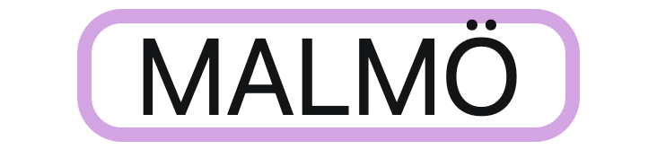
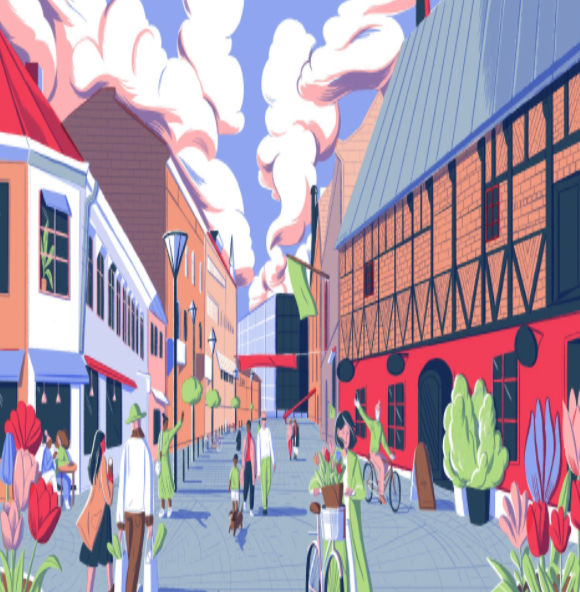
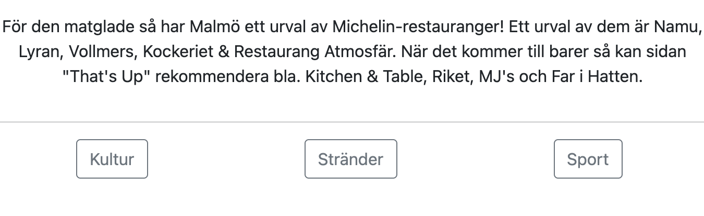

Det här projektet gjordes ganska tidigt i utbildningen som en övning på främst flexbox men också floating av bilder på en hemsida. Då jag bor i Malmö valde jag att göra en liten hemsida om staden, den innehåller både bilder och fakta. Här fick jag även öva på olika font-stilar och färger för bakgrund och text.


